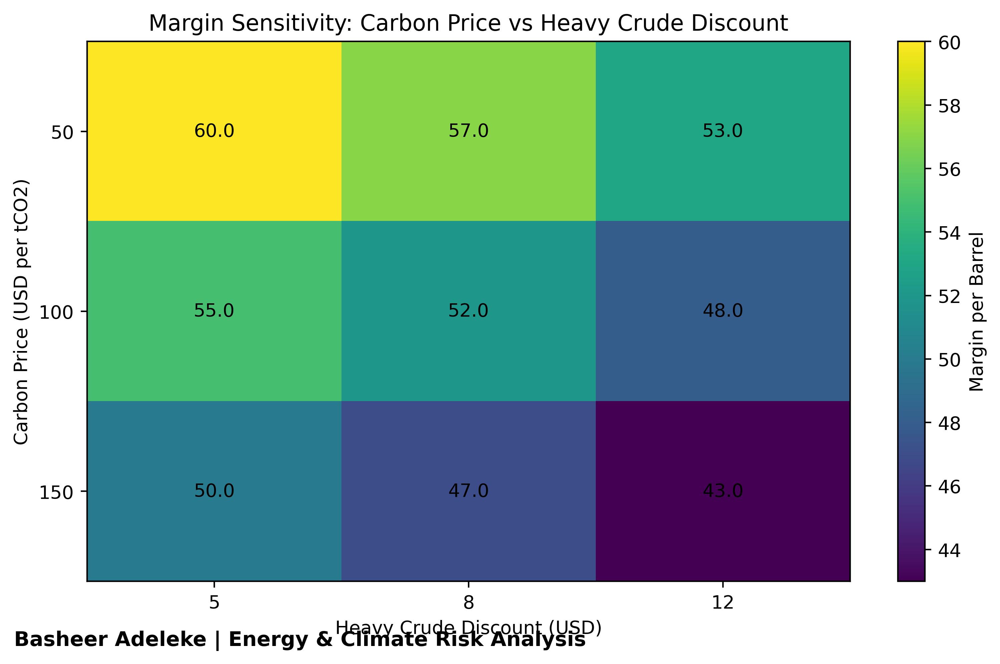
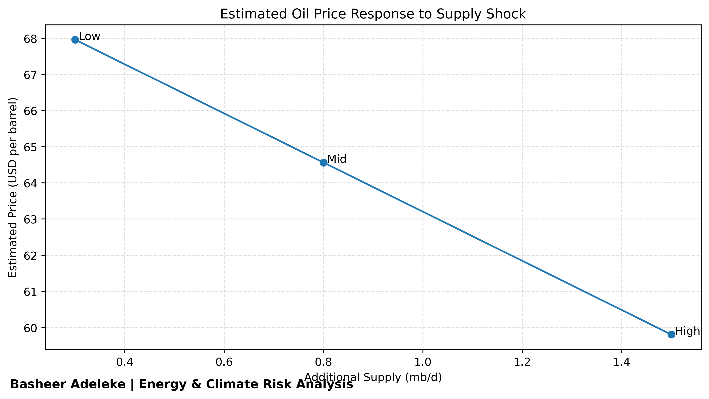
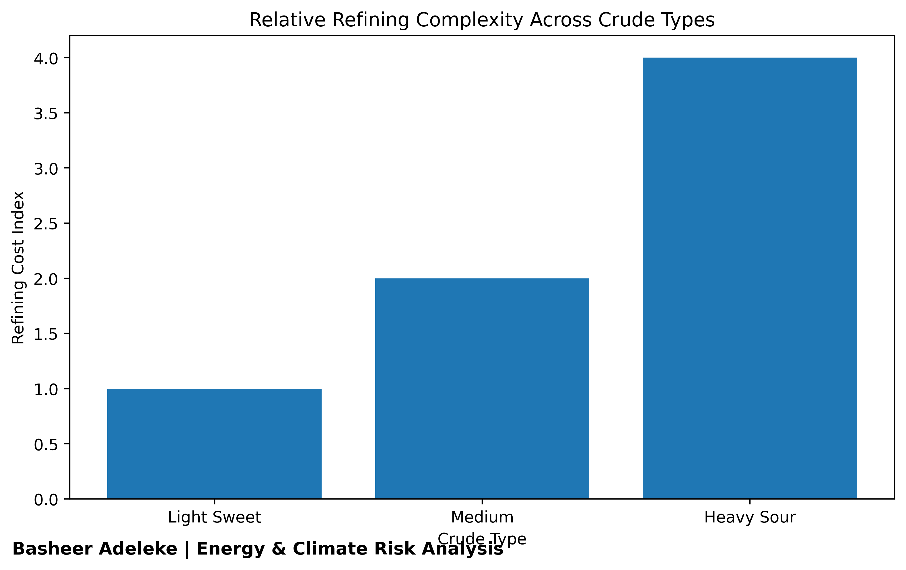
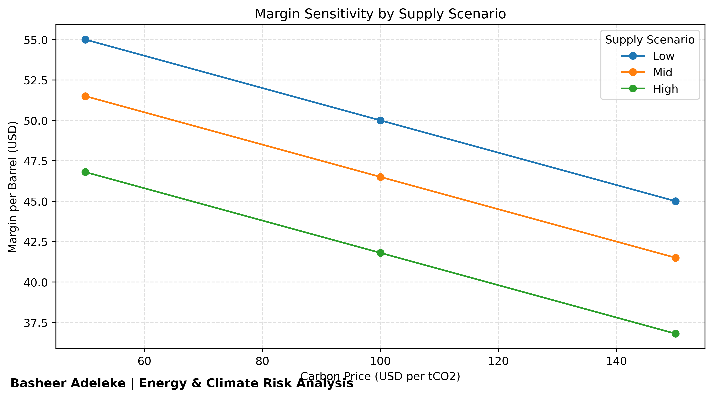
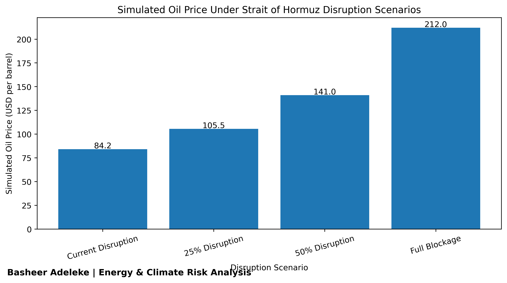

I analyze oil markets, carbon costs, supply disruptions, and infrastructure risks using data-driven models.
I am an Industrial Chemist and Data Analyst focused on the intersection of energy markets, climate risk, and sustainability.
My work explores how supply shocks, refining complexity, carbon pricing, and geopolitical disruptions interact to shape market outcomes in global energy systems.
Using Python, SQL, Tableau, and Excel, I turn complex datasets into clear, actionable insights for business, environmental, and strategic decision-making.
A multi-phase analysis of how heavy crude expansion, refining complexity, carbon pricing, and geopolitical disruptions affect oil prices, margins, and market resilience.
Tools: Python, Pandas, Matplotlib, Tableau, Excel

Visualizes how carbon price and heavy crude discount interact to compress project margins.

Estimates how different levels of additional oil supply can influence benchmark prices.

Shows why heavy crude is structurally harder and more expensive to refine than lighter grades.

Tests when heavy crude expansion stops making economic sense under combined market pressure.

Models how disruption to a major energy chokepoint could affect global oil supply and pricing.
Customer sentiment and service performance analysis using review and airline experience data.
View DashboardExplores club performance, goals, seasonal trends, and competition dynamics.
View DashboardVisualizes salary trends across industries, gender, and experience levels.
View DashboardMaps rental distribution and pricing patterns across Athens.
View DashboardEmail: basheeradeleke0@gmail.com
GitHub: github.com/BigBash0
LinkedIn: linkedin.com/in/adeleke-basheer